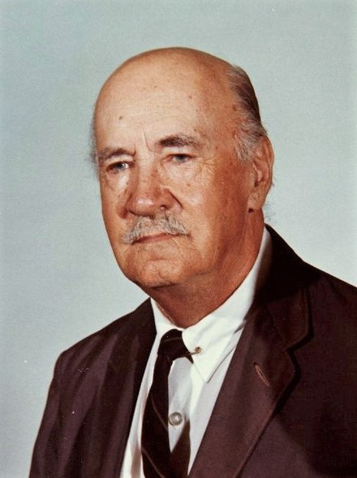

The man who invented the first successful mass-produced helicopter

Igor Sikorsky (1889 – 1972)
A Short Biography of Igor Sikorsky
Sikorsky was born on May 25, 1889 in the city of Kiev, Russian Empire (now Kyiv, Ukraine)
He was the youngest of five children.
His father, Ivan Alexeevich Sikorsky, was a professor of psychology in Saint Vladimir University (now
Taras Shevchenko National University).
Sikorsky's mother, Mariya Stefanovna Sikorskaya, was a physician who did not work professionally.
Young Igor was fond of the life and work of Leonardo da Vinci, and the stories of Jules Verne
He experimented with model flying machines, and by age 12, he had made a small rubber band-powered
helicopter.
Sikorsky began studying at the Saint Petersburg Maritime Cadet Corps, in 1903, at the age of 14.
In 1906, he determined that his future lay in engineering, so he resigned from the academy, despite his
satisfactory standing, and left the Russian Empire to study in Paris.
He returned to the Russian Empire in 1907, enrolling at the Mechanical College of the Kyiv Polytechnic
Institute.
After the academic year, Sikorsky again accompanied his father to Germany in the summer of 1908, where
he learned of the accomplishments of the Wright brothers' Flyer and Ferdinand von Zeppelin's rigid
airships. Sikorsky later said about this event: "Within twenty-four hours, I decided to change my life's
work. I would study aviation."
By the start of World War I in 1914, Sikorsky's airplane research and production business in Kyiv was
flourishing, and his factory made bombers during the war.
After the Russian revolution in 1917, Igor Sikorsky fled his homeland in early 1918.
He moved to France where he was offered a contract for the design of a new, more powerful Muromets-type
plane. But in November 1918 the war ended and the French government stopped subsidizing military orders,
and so he decided to move to the United States.
In the U.S., Sikorsky first worked as a school teacher and a lecturer, while looking for an opportunity
to work in the aviation industry.
In 1923, Sikorsky formed the Sikorsky Manufacturing Company in Roosevelt, New York.
The Sikorsky Manufacturing Company moved to Stratford, Connecticut in 1929. It became a part of the
United Aircraft and Transport Corporation (now United Technologies Corporation) in July of that
year.[42] The company manufactured flying boats, such as the S-42 "Clipper", used by Pan Am for
transatlantic flights.
His design plans eventually culminated in the first (tethered) flight of the Vought-Sikorsky VS-300 on
September 14, 1939, with the first free flight occurring eight months later on May 24, 1940. Sikorsky's
success with the VS-300 led to the R-4, which became the world's first mass-produced helicopter, in
1942.
Sikorsky passed away on October 26, 1972 in Easton, Connecticut, US